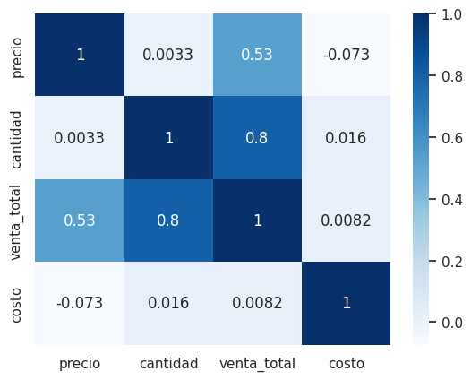

1Objetivo
Analizar el comportamiento de las ventas a partir de variables comerciales (precio, cantidad, categoría) y evaluar el impacto de las campañas de marketing en redes sociales (RRSS) sobre el desempeño comercial, mediante estadística descriptiva y visualizaciones interactivas.
2Estadística descriptiva
$75,29
Precio promedio por producto
6,5 u.
Cantidad promedio por venta
$489,36
Venta total promedio
2.998
Registros de venta analizados
El precio de los productos varía entre $26 y $124,97, con media y mediana casi idénticas (75,29 y 75,21), lo que sugiere una distribución simétrica sin valores extremos que la distorsionen. La venta total, en cambio, muestra una media (489,36) claramente superior a la mediana (418,07): esto indica una distribución sesgada hacia la derecha, con algunas ventas de importe elevado que empujan el promedio hacia arriba. Las ventas cubren prácticamente todo 2024, del 2 de enero al 30 de diciembre.
3Análisis exploratorio (EDA)
El histograma y el boxplot de ventas totales, comparando períodos con y sin campaña, muestran patrones muy similares entre ambos grupos.
La mayoría de las ventas —con o sin campaña activa— son de importe bajo o medio, y unas pocas ventas grandes generan la cola hacia la derecha que explica por qué la media supera a la mediana. En el boxplot, tanto la mediana como la dispersión central (el 50% de los datos) son muy parecidas entre los dos grupos, aunque en ambos casos aparecen outliers con ventas superiores a $1.400.
La matriz de dispersión (pairplot) confirma una fuerte relación positiva entre cantidad vendida y venta total, y una asociación positiva —aunque más débil— entre precio y venta total. No se observa relación visual clara entre precio y cantidad vendida.
4Correlación entre variables

Precio vs. cantidad vendida: correlación prácticamente nula (r = 0,003). Las variaciones en el precio no se asocian con cambios en la cantidad de productos vendidos.
Cantidad vendida vs. venta total: correlación positiva alta (r = 0,798), resultado esperable ya que la venta total depende directamente de la cantidad vendida.
Precio vs. venta total: correlación positiva moderada (r = 0,529), más débil que la anterior pero significativa.
5Evolución mensual de ventas (RRSS)
Serie de tiempo interactiva: venta promedio mensual, en campaña vs. fuera de campaña.
6Ventas por producto: en campaña vs. fuera de campaña
Comparación de la venta promedio por producto según si hubo campaña de RRSS activa.
7Venta y costo de campaña por producto (campaña activa)
Compará el monto vendido contra el costo de marketing invertido, por producto, durante campañas activas de RRSS. Incluye botones para alternar entre modo agrupado y apilado.
8Impacto y ROI de la campaña RRSS
93,5x
ROI: por cada $1 invertido en campaña
1.657
Ventas registradas durante la campaña
$125.449,52
Facturación durante la campaña
Durante la campaña de marketing por RRSS se registraron 1.657 ventas por $125.449,52, con un ratio de 93,5 entre venta generada y costo de campaña. Sin embargo, este número hay que leerlo con cautela: el costo registrado durante los períodos de campaña es muy bajo en relación al de los períodos sin campaña, por lo que el ratio se infla más por el denominador chico que por un efecto real sobre las ventas. De hecho, al comparar las distribuciones de venta total (histograma y boxplot, sección 3) entre "en campaña" y "fuera de campaña", ambas resultan prácticamente idénticas en mediana y dispersión. Esto sugiere que, con los datos disponibles, no hay evidencia sólida de que la campaña haya modificado el comportamiento de las ventas — el ratio de costo/venta no equivale a un ROI causal.
9Ventas por categoría de producto
Electrodomésticos
$505.299,63
1.000 ventas · 6.592 unidades
Electrónica
$482.577,80
998 ventas · 6.413 unidades
Decoración
$479.216,09
1.000 ventas · 6.490 unidades
Los tres productos con mayor rendimiento individual se destacan claramente del resto:
🏆 Lámpara de mesa
🏆 Auriculares
🏆 Microondas
Un escalón más abajo se ubican muchos productos con ventas totales entre $40.000 y $60.000, con escasa diferencia de rendimiento entre sí. Por eso se definió como "alto rendimiento" únicamente a los tres productos que se destacan claramente del resto.
10Conclusiones
El análisis muestra que la cantidad vendida es la variable con mayor influencia sobre la venta total, muy por encima del precio, que tiene un efecto moderado. El ratio entre venta generada y costo de campaña en RRSS es alto (93,5x), pero esto responde principalmente al bajo costo registrado durante los períodos de campaña, no a un aumento comprobado en las ventas: la comparación de distribuciones muestra un comportamiento muy similar con y sin campaña activa. Por lo tanto, con la información disponible no puede afirmarse que la campaña haya tenido un impacto causal significativo sobre las ventas. A nivel de categorías, Electrodomésticos lidera la facturación, aunque las tres categorías analizadas muestran un desempeño parejo. Tres productos puntuales —lámpara de mesa, auriculares y microondas— se distinguen claramente como los de mayor rendimiento individual, y representan una oportunidad concreta para futuras estrategias comerciales focalizadas.